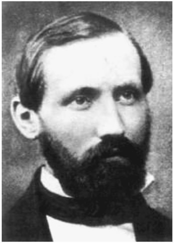
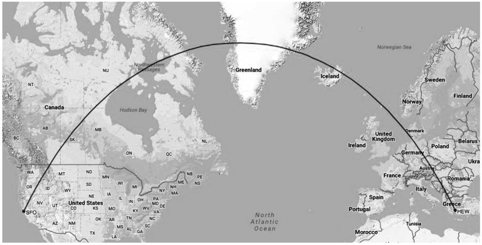
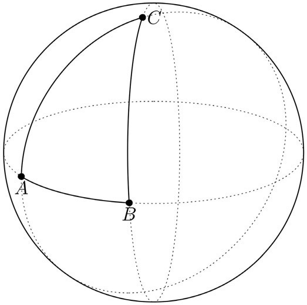

Bernhard Riemann: German (1826–1866)
In many European countries, a doctoral thesis is alone not sufficient to obtain a professorship at a university. In addition, one has to write a habilitation thesis that must be reviewed by and successfully defended before an academic committee. The process of a habilitation is often seen as a second doctoral dissertation. The habilitation is a postdoctoral qualification required to independently teach a subject in Europe at the university level. It must be accomplished without guidance of a supervisor, and it defines a higher level of scholarship than a doctoral dissertation. In mathematics, as well as in the natural sciences, the typical habilitation period is four to ten years. During this time, numerous research articles in high-quality scientific journals must be published. The thesis can then be either cumulative (that is, basically a collection of selected publications) or a monograph. If the thesis has been accepted, the applicant has to give a public lecture after which the habilitation is awarded. There is no concept of a habilitation in the United States, and there is an ongoing political discussion in Germany and other countries to abolish the system of the habilitation; it is a time-consuming obstacle in an academic career, contributing to the brain drain of promising young researchers to the United Kingdom and the United States, where their chances of getting a professorship at a reasonable age are often better.
In 1853, Bernhard Riemann was in the final stages of his habilitation at the University of Göttingen. He had been working for nearly three years

Figure 36.1. Bernhard Riemann.
on it, achieving several important new results and solving open problems related to the representation of functions by trigonometric series (these are infinite sums of sine and cosine functions with different wavelengths and amplitudes). He had also introduced a mathematically rigorous concept for the integral of discontinuous functions, a notion that would later be called the Riemann integral. Having already earned some reputation as a mathematician, the only missing step necessary to complete his habilitation was to give a public lecture before the habilitation committee. By the rules of the university, Riemann had to submit titles of three different lectures belonging to different areas of mathematics, from which the faculty of philosophy was to choose one. Riemann had already worked out the details of two of the three topics, but not for the third one, titled “Über die Hypothesen, die der Geometrie zu Grunde liegen” (On the hypotheses that lie on the foundations of geometry). Although, or perhaps because, it was the topic least related to Riemann’s prior work and interests, it was chosen by the faculty, more precisely by Carl Friedrich Gauss, professor at Göttingen and also Riemann’s doctoral thesis supervisor. Riemann’s habilitation lecture, on which he worked for several months, became a famous classic of mathematics, changing the whole subject of geometry. By introducing completely new and brilliant viewpoints on geometrical ideas, he was able to generalize geometrical concepts and even the notion of space itself in a way that would evoke a whole new branch of mathematics. Before we expose some of Riemann’s groundbreaking ideas and its consequences, we want to give a brief overview of his life.
Georg Friedrich Bernhard Riemann was born on September 17, 1826, in Breselenz, a village in the Kingdom of Hanover (now Germany). His father was a poor Lutheran pastor; his mother died before her children had reached adulthood. Until the age of fourteen, Bernhard was educated at home by his father, assisted by a teacher from a local school. He was a shy and anxious child. In 1840, Bernhard went to the city of Hanover to live with his grandmother and attend the Lyceum (middle school), where he immediately entered the third-year class. Two years later, his grandmother died, and Bernhard moved to Lüneburg to continue his education at the Johanneum Gymnasium (high school). While he was not very good in languages, history, or geography, he showed exceptional skills and interest in mathematics. His teachers soon recognized his incredible talent, and the school principal allowed him to study mathematics books from his own library, among them Legendre’s 900-page book on the theory of numbers, which Bernhard read in six days. In 1846, Riemann enrolled at the University of Göttingen to study theology and become a pastor like his father. However, his strong interest in mathematics naturally made him attend some mathematics lectures as well. It became clear to him that what he really wanted to study was mathematics. He asked his father for permission and began to take courses in mathematics as a regular student. Among his teachers in the elementary courses were well-known mathematicians Moritz Stern (1807–1894) and Johann Benedict Listing (1808–1882). Gauss, the most famous mathematician at Göttingen, was mainly teaching astronomy at that time. After one year in Göttingen, Riemann moved to Berlin to study advanced topics under Peter Gustav Dirichlet (1805–1859), Gotthold Eisenstein (1823–1852), Carl Jacobi (1804–1851), and Jakob Steiner (1796–1863). Of his teachers in Berlin, Dirichlet probably had the greatest influence on Riemann. Dirichlet always tried to condense the essence of a mathematical theory into an intuitively comprehensible idea and then use this idea as a guiding principle to find new mathematical results. Riemann embraced Dirichlet’s style of doing mathematics and he was full of ideas when he returned to Göttingen in 1849. He began to write his doctoral dissertation under the supervision of Gauss and got a temporary position as the assistant to the physicist Wilhelm Weber (1804–1891), from whom he learned a lot about theoretical physics. His doctoral thesis was completed in 1851 and in his report on the thesis, Gauss describes Riemann as having “a gloriously fertile originality.” With Gauss as a mentor, Riemann started to work on his habilitation.
When Riemann finally delivered his habilitation lecture “On the hypotheses which underlie geometry,” only Gauss, one of the leading geometers at the time, was able to fully recognize the significance of Riemann’s work and was deeply impressed by it. The lecture contained hardly any formulas; it was not a purely mathematical presentation but rather a philosophical treatise about the meaning of geometrical concepts, thereby identifying certain implicit hypotheses on the nature of space on which our understanding of geometry is based. The ingenuity of Riemann’s thoughts was to give up these hypotheses and replace geometrical notions relying on them by more general concepts that can be formulated without any pre-assumptions on the underlying space. What are these hypotheses that Riemann abandoned?
Well, you may recall that the geometry taught in high school is called Euclidean geometry; it is based on five postulates attributed to the Alexandrian Greek mathematician Euclid. The fifth of his postulates essentially says that two parallel lines never cross, even if we extend them infinitely. This, however, is just an assumption that cannot be proved or verified by experiment. To illustrate that the parallel postulate is by no means trivial, let’s consider the surface of the Earth, which, for simplicity, we may think of as a perfect sphere. We know that if we draw two lines on a sphere, starting out parallel or “in the same direction,” they will inevitably meet at some point. Think of two longitudinal circles that define perfectly parallel tracks close to the equator, but they converge at the poles. Now you may object that lines on a sphere are not actually straight, so the parallel postulate doesn’t apply here. We know that the Earth is not flat and looking at our planet from some distance, it’s obvious that the lines of fixed longitude are not straight lines in space. But imagine for a moment that we were human beings living not on the surface of our planet, but “in the surface,” meaning that we were two-dimensional beings living in a two-dimensional world as in the famous satirical novella Flatland: A Romance of Many Dimensions by the English schoolmaster Edwin A. Abbott, first published in 1884. How would a “flat-lander,” confined to the two dimensions of a sphere, without the possibility

Figure 36.2.
to move in a third dimension, define a line to be straight? Well, a straight line is the shortest connection between any two given points. But the shortest connections between points on a sphere are indeed arcs of great circles (circles on the surface of the sphere and with their center at the center of the sphere)—they are the shortest lines connecting two points on a sphere. This is also the reason that airplanes flying from the West Coast of the United States to Europe will fly over Greenland; they follow a great circle path. Figure 36.2 shows the arc of the great circle connecting San Francisco and Athens, Greece. The two cities have almost the same latitude, but flying eastward along a circle of latitude would amount to a much longer distance than flying northward to Greenland and then southward to Athens. If you have a globe handy, this is easy to see. Only on a flat map, where proportions are distorted, the “straight” route along a circle of latitude appears to be shorter.
For “flatlanders” living on the surface a sphere, a great circular arc would appear “as straight as straight can be,” since their world is made up of only two dimensions, and they cannot see that their two-dimensional space is actually curved. What an observer in the surrounding three-dimensional space would call a great circle would appear to be a straight line for them. Moreover, if their habitat would only cover a very small patch of the sphere (think of human-sized creatures on the surface of the Earth), they would never find out that these perfectly straight lines would eventually meet, if only extended long enough. If we let a ball roll freely on the surface of the Earth, it would also trace out a great circle, but locally its path will look like a straight line. Two balls starting out side by side and rolling freely with equal velocity would eventually collide, since they would follow great circle routes. However, because we are so much smaller than the Earth, we are not able to detect the curvature of the Earth from the observation of balls rolling on its surface. There are other effects from which the spherical shape of the Earth can be deduced. But how could flatlanders find out whether they are living on a flat plane or on a curved surface like a sphere? Apart from measuring whether the distance between two straight lines remains constant as the lines are extended, they could also measure the sum of the angles in a triangle. You know that the sum of the angles of a triangle on a plane is always 180 degrees. But this is not true for triangles on a sphere! The sum of the angles of a triangle on the sphere is always greater than 180 degrees; actually, the sum of the angles of a spherical triangle is between 180 degrees and 540 degrees. For example, the triangle ABC shown in figure 36.3 has two right angles at the vertices A and B, already yielding 180 degrees together, plus the angle at vertex C.

Figure 36.3.
To see that the angle sum can get arbitrarily close to 540 degrees, keep points A and C fixed and move point B eastward along the equator, around the sphere until it almost touches point A. Then we still have right angles at A and B, but the angle at vertex C will get arbitrarily close to 360 degrees, and hence the sum of all three angles can be arbitrarily close to 540 degrees. Thus, we have convinced ourselves that on the surface of a sphere, it is not true that the sum of the angles of a triangle is 180 degrees, nor is it true that parallel lines never intersect. Both statements are rather obvious, if we look at the sphere as a two-dimensional surface in three-dimensional space; they can also be turned around—that is, if we find that the sum of the angles of a triangle is not 180 degrees, then the surface on which this triangle is drawn must be curved. This implies that creatures living in a two-dimensional space can, at least in principle, find out whether their space is curved. Riemann’s ingenuity was to realize that it is not only possible to determine the curvature of a two-dimensional space without knowing about an ambient three-dimensional space (for instance by measuring the angles of a triangle), but an ambient higher-dimensional space doesn’t even have to exist for a space to be curved. He invented the notion of n-dimensional manifolds to describe spaces in which the Euclidean parallel postulate is not necessarily true, and in which the sum of the angles of a triangle is larger or smaller than 180 degrees. Moreover, he introduced mathematical tools and objects that allow us to study properties of general manifolds, for instance curvature. For example, the geometric properties of the surface of a sphere can be described entirely in terms of a two-dimensional Riemannian manifold without referring to an ambient three-dimensional space. But what makes us so sure that the three-dimensional space we live in is not curved? Could it be that two parallel lines would eventually meet, perhaps after a distance of thousands of light years? Riemann already contemplated such possibilities in his habilitation lecture, viewing our three-dimensional world as a three-dimensional manifold that might be curved. Unfortunately, the brilliancy and the consequences of Riemann’s work, forming the basis of what is now called Riemannian geometry, was not understood by his contemporaries; his ideas were too far ahead of his time.
After his habilitation, Riemann began to lecture at the university. At that time, the main part of a lecturer’s income was tuition fees from the students. Riemann’s income was particularly low, since he was teaching advanced courses that only a handful of students would attend. Yet he was still happy with his job and teaching helped him to slowly overcome his shyness, as some touching letters to his father reveal. In spite of his low budget, he supported two of his sisters, who were sent to him after his brother died. Riemann’s mentor, Gauss, died in 1855, but Riemann, still in his late twenties, unfortunately did not get Gauss’ chair at Göttingen University. Dirichlet, twenty years older than Riemann, became the successor to Gauss and attempts to create a permanent position for Riemann failed. However, in 1857, the university at least granted him a regular salary. Riemann was an exceptionally versatile mathematician, interested in various branches of mathematics as well as physics. His works were always guided by intuitive ideas that he also tried to convey and employ in his publications, often allowing him to avoid tedious computations that would not provide any deeper insight. This is also one of the reasons that mathematicians still find his publications very inspiring to read. They are by no means outdated or old-fashioned! In 1859, Dirichlet died and Riemann was finally appointed to the chair of mathematics at Göttingen University and also elected to the Berlin Academy of Sciences. Financially secure, he married Elise Koch in 1862. In the autumn of that year, Riemann got a severe cold that developed into tuberculosis. He had had problems with his health throughout his life, and his mother as well as four of his six siblings had died young. Hoping to improve his health in a warmer climate, Riemann went to Sicily and stayed there during the winter. He returned to Göttingen University, but his physical condition soon got worse again and he moved back to Italy, and this time he stayed for over one year. Following another period at Göttingen University, Riemann died on this third journey to Italy in Selesca on Lago Maggiore on July 20, 1866.
In 1905, Albert Einstein published his special theory of relativity, in which space and time are no longer independent, but combined into a four-dimensional space-time, or, as Hermann Minkowski (1864–1909) wrote:
Space by itself, and time by itself, are doomed to fade away into mere shadows, and only a kind of union of the two will preserve an independent reality.
After this revolutionary milestone of physics, Einstein began to search for a way to incorporate gravity into his theory. During his attempts he came across Riemann’s theory of manifolds to describe curved spaces, which would turn out to be the key to a relativistic theory of gravity. However, Einstein was not a mathematician, so he needed help. The mathematician Marcel Grossmann (1878–1936), a friend and former colleague, mentored Einstein in Riemannian geometry and collaborated with him. After ten years of “blood, sweat, and tears,” Einstein presented his general theory of relativity, which many consider to be the most beautiful physical theory ever invented. In it, gravity is described as the curvature of four-dimensional space-time, which is represented by a so-called semi-Riemannian manifold. Einstein’s field equations specify how matter and radiation influence the geometry of this four-dimensional manifold by relating the Riemann curvature tensor to the distribution of matter and radiation. Riemann’s theory of curved spaces was the key ingredient in Einstein’s theory of general relativity, and it is remarkable that in his habilitation lecture, Riemann was already “on the right track” when he pondered the possibility that the physical space we live in could actually be a curved space.